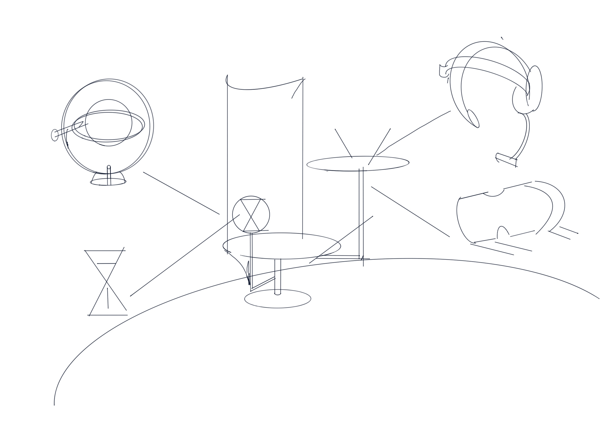
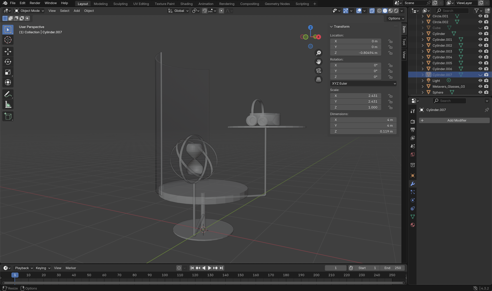
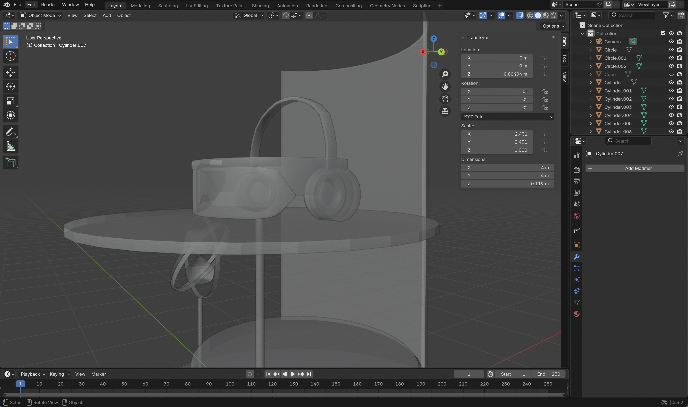

Introduction
Emotional Survillance
In a hyper-digitalized future, the Emotional Feedback Loop System (EFLS) is a speculative technology that monitors and regulates employees' emotions in real-time to sustain workplace productivity and social stability. When emotional instability threatens efficiency, the system rewinds the day to its start—while preserving memory—allowing employees to consciously adjust their responses and align with workplace expectations.
This system is designed to control and optimize emotions, reducing societal conflicts and enhancing workplace efficiency.
Reference
1. Microsoft Viva
A Microsoft-developed employee experience platform uses data to analyze employees' work habits and emotional states, helping businesses improve employee experience and efficiency. Through its emotion analysis feature, it can assess employees' stress levels and work-related emotions, providing managers with suggestions to help with emotional management and work adjustments.
2. Affectiva
A company specializing in Emotion AI focuses on recognizing consumer emotional reactions through facial expressions and vocal tones. This company utilizes AI technology to analyze users' facial expressions while they watch advertisements or product demonstrations, evaluating their emotional responses to the ads.
2D Matrix

Sketch
Process
 